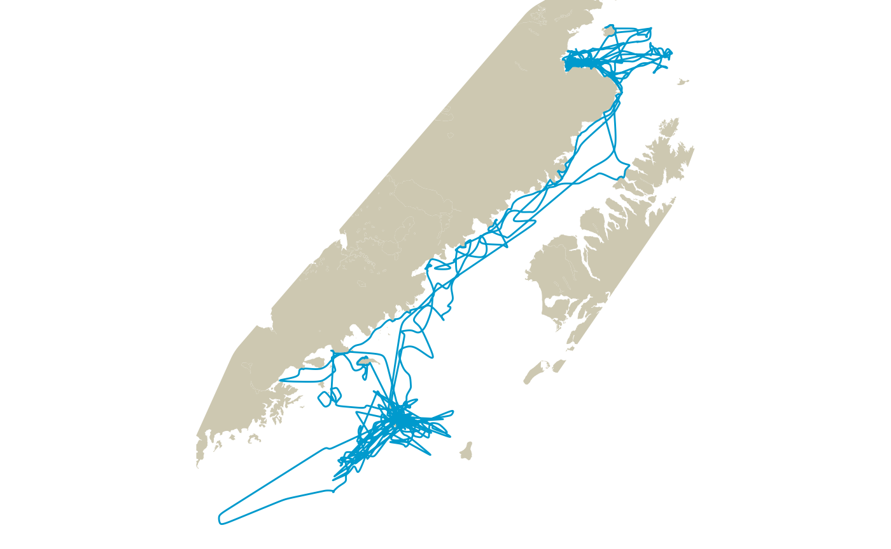

akharborseal_demo.Rmd
library(pathroutr)
#devtools::load_all(here::here())This example relies on two non-release packages of stplanr and {crawl}
# not run
library(remotes)
install_github('NMML/crawl@devel')
install_github('ropensci/stplanr')
library(crawl)
#> crawl 2.2.3 (2019-04-30)
#> Demos and documentation can be found at our new GitHub repository:
#> https://dsjohnson.github.io/crawl_examples/
library(stplanr)Additional packages we’ll want to load
library(dplyr)
#>
#> Attaching package: 'dplyr'
#> The following objects are masked from 'package:stats':
#>
#> filter, lag
#> The following objects are masked from 'package:base':
#>
#> intersect, setdiff, setequal, union
library(sf)
#> Linking to GEOS 3.8.1, GDAL 3.1.1, PROJ 6.3.1
library(ggplot2)
library(ggspatial)
library(dplyr)The purpose of this is to demonstrate a more ‘real world’ use of {pathroutr} for re-routing of marine animal movement around land features. Here, we will use the Alaska harbor seal data provided in the {crawl} package to:
{crawl}’s movement model to predict the most likely path{crawl}’s multiple imputation functionality to create a set of possible predicted paths that span model uncertaintyFor our land data, we will source in the Alaska 1:250000 coastal data polygon. This is provided by the Alaska Department of Natural Resources and was obtained from their open data portal (https://gis.data.alaska.gov/datasets/alaska-1250000). The commented code provides a query to pull the data directly from the portal API. Note, only those polygons that intersect with the bounding box of our harbor seal movement are included.
NOTE: because this step is time consuming, we will load directly from package data
# akcoast_qry <- "https://arcgis.dnr.alaska.gov/arcgis/rest/services/OpenData/Physical_AlaskaCoast/MapServer/2/query?where=1%3D1&outFields=*&geometry=-159.240%2C55.112%2C-152.422%2C59.413&geometryType=esriGeometryEnvelope&inSR=4326&spatialRel=esriSpatialRelIntersects&outSR=3338&f=json"
#
# akcoast <- sf::read_sf(akcoast_qry)
# akcoast <- sf::st_make_valid(akcoast)
data("akcoast")Now, let’s load in our harbor seal data from the {crawl} package. The harborSeal_sf data is only available in the devel branch. We also transform to EPSG:3338.
data("harborSeal_sf")
harborSeal_sf <- harborSeal_sf %>% sf::st_transform(3338)Let’s plot things to make sure everything looks good. The harborSeal_sf data has missing values in the geometry field so we need to filter those out when making a line.
l <- harborSeal_sf %>%
dplyr::filter(!sf::st_is_empty(.)) %>%
dplyr::summarise(do_union = FALSE) %>%
sf::st_cast('LINESTRING')
ggplot() +
ggspatial::annotation_spatial(akcoast, fill = "cornsilk3", size = 0) +
ggspatial::layer_spatial(l, color = "darkgrey", size = 0.5) +
ggspatial::layer_spatial(harborSeal_sf, color = "deepskyblue3", size = 0.5) +
theme_void()Movement data from a harbor seal in Alaska. Raw Argos observations and the derived connect-the-dots trackline
While the preferred approach would be to rely on a movement model for predicting the path of our seal, it can sometimes be useful to just correct the raw observations. So, that’s what we’ll do first.
With such a large geographic area, the computational time needed to create our visibility graph could be quite large. So, we will want to limit our land polygon as much as we reasonably can.
We’ll do this by creating a convex hull boundary around our observed data and limiting the region to this space. Here, we’ll go with a buffer of 50 km around each point and rely on the buffered features to create our convex hull. The size of the buffer is case-specific. In this case, we could likely get away with a smaller buffer if we were only interested in the connect-the-dot track or a model predication. But, later, we will also impute additional, possible tracks from the model fit to better represent model uncertainty. For this reason, we went with a larger buffer so we only have to create a single network graph.
land_region <- sf::st_buffer(harborSeal_sf, dist = 50000) %>%
sf::st_union() %>%
sf::st_convex_hull() %>%
sf::st_intersection(akcoast) %>%
st_collection_extract('POLYGON') %>%
st_sf()
ggplot() +
ggspatial::annotation_spatial(land_region, fill = "cornsilk3", size = 0) +
ggspatial::layer_spatial(l, color = "darkgrey", size = 0.5) +
ggspatial::layer_spatial(harborSeal_sf, color = "deepskyblue3", size = 0.5) +
theme_void()Land barrier polygon after limiting to a 50km buffered convex hull of the observation points
At this point, we are ready to create our visibility graph using the pathroutr::prt_visgraph() function. We’ll keep centroids = FALSE in order to speed up the build. Adding additional centroids will increase the likelihood of linearity in the calculated shortest path. This is especially true when the shortest path crosses larger areas of open water. However, adding the additional centroids results in a very large increase in computational time (both in createion of the visual graph and in subesquent operations). There is likely little improvement in situations where the shortest path routing follows the coast. The default setting is centroids=FALSE. If a user chooses to set centroids=TRUE, we strongly encourage setting centroid_limit to a large value (default is 1e+07).
NOTE: the following step will take approximately 30 minutes. Here, to save time, the code is not evaluated and we will load from package data.
vis_graph <- prt_visgraph(land_region)
#> Warning in SpatialLinesNetwork.sf(edges): Graph composed of multiple subgraphs,
#> consider cleaning it with sln_clean_graph().Let’s take a look at our network. The ‘edges’ are stored within @sl slot of vis_graph. We can pass thing along to ggspatial::layer_spatial() just like an sf object.
ggplot() +
ggspatial::annotation_spatial(land_region, fill = "cornsilk3", size = 0) +
ggspatial::layer_spatial(vis_graph@sl, size = 0.5) +
theme_void()Visibility graph network edges created with the stplanr package. All vertices from the land polygon were used as nodes in the network and any edges that crossed land were removed.
Note the large triangles in the large, open water areas. This is a key advantage for our purpose as we concentrate the detail of our network along the coastline where routing of our tracks around land requires the most detail. The trade-off is that any shortest path routing that crosses the large, open areas will have less linearity. If we had set centroids=FALSE, then a centroid point would have been added to each of these triangles and the mesh would have been rebuild to include those points.
In this example, our interest is to re-route only the portions of the track that cross land. So, we need to identify the segments of consecutive points on land and, also, the points in water that bookend each segment. We will use this information to calculate our shortest path through our network and create an updated series of point features.
Since our bookend points were not used to create our visibility graph, we need to also determine the closes network node to each point.
track_pts <- harborSeal_sf %>% dplyr::filter(!sf::st_is_empty(.))
segs_tbl <- get_barrier_segments(track_pts,land_region)
segs_tbl <- segs_tbl %>% prt_nearestnode(vis_graph, maxdist = 50000)
segs_tbl
#> # A tibble: 44 x 8
#> sid start_idx end_idx n_pts start_pt
#> <int> <dbl> <dbl> <dbl> <POINT [m]>
#> 1 1 70 72 1 (-7141.435 1009874)
#> 2 2 211 213 1 (17825.82 1009686)
#> 3 3 296 298 1 (-166514.5 678462.8)
#> 4 4 299 301 1 (-166385.8 678569.6)
#> 5 5 310 312 1 (-159772 672617.8)
#> 6 6 313 315 1 (-168417.8 679098.1)
#> 7 7 346 348 1 (-166934.5 680376.9)
#> 8 8 372 375 2 (-167836 679632.4)
#> 9 9 390 392 1 (-164953 673937.4)
#> 10 10 398 400 1 (-163341.9 680010)
#> # … with 34 more rows, and 3 more variables: end_pt <POINT [m]>,
#> # start_node <int>, end_node <int>Now, we have all the information we need to calculate the shortest path through our network for each segment. The stplanr::sum_network_routes() function only calculates the LINESTRING from start node to end node. So, the prt_shortpath() function extends each end to connect with our bookend points for each segment.
segs_tbl <- segs_tbl %>% prt_shortpath(vis_graph)
ggplot() +
ggspatial::annotation_spatial(land_region, fill = "cornsilk3", size = 0) +
ggspatial::layer_spatial(segs_tbl$geometry, color = "deepskyblue3") +
theme_void()Segments that were identified to cross land have been re-routed along the shortest path throught visibility network
This last bit is the point where we insert the fixed points back into our original path.
track_pts_fix <- prt_update_points(track_pts, segs_tbl)
track_line_fixed <- track_pts_fix %>% summarise(do_union = FALSE) %>% st_cast('LINESTRING')
ggplot() +
ggspatial::annotation_spatial(land_region, fill = "cornsilk3", size = 0) +
ggspatial::layer_spatial(track_line_fixed, color = "darkgrey", size = 0.5) +
ggspatial::layer_spatial(track_pts_fix, color = "deepskyblue3", size = 0.5) +
theme_void()Raw Argos observation geometries updated in place with the re-routed paths
First, let’s fit our movement model. Here, we rely on an example from the {crawl} package. But, other model approaches (e.g. {foieGras}) should work as well. We have plans to provide specific methods for a variety of model outputs.
As you might have noticed when we re-routed our raw observations, the trackline derived from those points can still cross land. This is because we only control for the presence of observation points on land. At the irregular and sometimes large time intervals common to location data for marine mammals, this cannot be avoided. However, once we have a movement model, we can predicted a finer location intervals and limit this possibility. You will notice in this example, the prediction interval is every 5 minutes.
##Fit model as given in Johnson et al. (2008) Ecology 89:1208-1215
## Start values for theta come from the estimates in Johnson et al. (2008)
fixPar = c(log(250), log(500), log(1500), rep(NA,5), 0)
displayPar( mov.model=~1, err.model=list(x=~Argos_loc_class-1),data=harborSeal_sf,
activity=~I(1-DryTime),fixPar=fixPar)
#> ParNames fixPar thetaIdx
#> 1 ln tau Argos_loc_class0 5.521461 NA
#> 2 ln tau Argos_loc_class1 6.214608 NA
#> 3 ln tau Argos_loc_class2 7.313220 NA
#> 4 ln tau Argos_loc_class3 NA 1
#> 5 ln tau Argos_loc_classA NA 2
#> 6 ln tau Argos_loc_classB NA 3
#> 7 ln sigma (Intercept) NA 4
#> 8 ln beta (Intercept) NA 5
#> 9 ln phi 0.000000 NA
constr=list(
lower=c(rep(log(1500),3), rep(-Inf,2)),
upper=rep(Inf,5)
)
set.seed(123)
fit1 <- crwMLE(
mov.model=~1, err.model=list(x=~Argos_loc_class-1), activity=~I(1-DryTime),
data=harborSeal_sf, Time.name="Time",
fixPar=fixPar, theta=c(rep(log(5000),3),log(3*3600), 0),
constr=constr, method="L-BFGS-B",
control=list(maxit=2000, trace=1, REPORT=1)
)
#> Beginning SANN initialization ...
#> Beginning likelihood optimization ...
#> iter 1 value 41202.609844
#> iter 2 value 41056.998394
#> iter 3 value 40756.499671
#> iter 4 value 40146.411888
#> iter 5 value 40066.268387
#> iter 6 value 40005.050127
#> iter 7 value 40001.092459
#> iter 8 value 40001.050325
#> iter 9 value 40001.048541
#> iter 10 value 40001.048534
#> final value 40001.048534
#> converged
pred1 = crwPredict(fit1, predTime = '10 min')
pred1_sf <- pred1 %>% crw_as_sf("POINT","p")As before, we need to identify all of the segments of consecutive locations on land and determine the associated start and end nodes within our network.
segs_tbl <- get_barrier_segments(pred1_sf,land_region)
segs_tbl <- segs_tbl %>% prt_nearestnode(vis_graph)
segs_tbl
#> # A tibble: 147 x 8
#> sid start_idx end_idx n_pts start_pt
#> <int> <dbl> <dbl> <dbl> <POINT [m]>
#> 1 1 3639 3652 12 (16246.11 1008908)
#> 2 2 3723 3727 3 (13879.22 1009100)
#> 3 3 3728 3732 3 (14287.79 1007627)
#> 4 4 3732 3834 101 (14675.3 1006230)
#> 5 5 3972 3976 3 (46971.14 912298.8)
#> 6 6 3984 3992 7 (44466.22 904097.1)
#> 7 7 4889 4892 2 (-169612.5 678456.2)
#> 8 8 5286 5296 9 (-166915.1 673045.5)
#> 9 9 5317 5345 27 (-166337.5 678529.5)
#> 10 10 5415 5423 7 (-166152.1 678410.4)
#> # … with 137 more rows, and 3 more variables: end_pt <POINT [m]>,
#> # start_node <int>, end_node <int>As before, we use the prt_shortpath() function to calculated all of our re-routed paths
segs_tbl <- segs_tbl %>% prt_shortpath(vis_graph)
ggplot() +
ggspatial::annotation_spatial(land_region, fill = "cornsilk3", size = 0) +
ggspatial::layer_spatial(segs_tbl$geometry, color = "deepskyblue3") +
theme_void()Re-routed segments from the predicted path
This last bit is the point where we insert the fixed points back into our original path. This is done by taking the number of points in the original segment and distributing an equal number of points along the updated path. At this time, the geometry is simply updated in place. This isn’t, technically, the correct approach as all of the model prediction parameters are no longer valid for these updated records. Expect this workflow/function/approach to change. But, for now, it allows us to demonstrate the issue and troubleshoot any issues.
track_pts_fix <- prt_update_points(pred1_sf, segs_tbl)
track_line_fixed <- track_pts_fix %>% summarise(do_union = FALSE) %>% st_cast('LINESTRING')
ggplot() +
ggspatial::annotation_spatial(land_region, fill = "cornsilk3", size = 0) +
ggspatial::layer_spatial(track_line_fixed, color = "deepskyblue3", size = 0.5) +
theme_void()Updated predicted path with re-routed geometries
The recommended analytic workflow for {crawl} movement models is to characterize movement from a collection of imputed paths from the model fit. The {pathroutr} re-routing can be applied to each of these imputed paths and, hopefully, provide a more complete picture of uncertainty.
We will use the crawl::crwPostIS() function to create our imputed paths.
crw_sim <- crawl::crwSimulator(fit1, predTime = "10 min")
#> Computing importance weights ...
midf <- tibble::tibble(.rows = 5) %>% dplyr::rowwise() %>%
mutate(postis = list(crwPostIS(crw_sim, fullPost = FALSE)),
pts = list(crw_as_sf(postis, locType = "p", ftype = "POINT")),
lines = list(crw_as_sf(postis, locType = "p", ftype = "LINESTRING")),
segs_tbl = list(get_barrier_segments(pts, land_region) %>%
prt_nearestnode(vis_graph) %>%
prt_shortpath(vis_graph)),
pts_fix = list(prt_update_points(pts, segs_tbl)),
lines_fix = list(pts_fix %>% summarise(do_union = FALSE) %>% st_cast('LINESTRING'))
)
sim_lines <- do.call(rbind, midf$lines_fix)
ggplot() +
ggspatial::annotation_spatial(land_region, fill = "cornsilk3", size = 0) +
ggspatial::layer_spatial(sim_lines, color = "deepskyblue", alpha = 0.5) +
ggspatial::layer_spatial(track_line_fixed, color = "deepskyblue3", size = 0.5) +
theme_void()